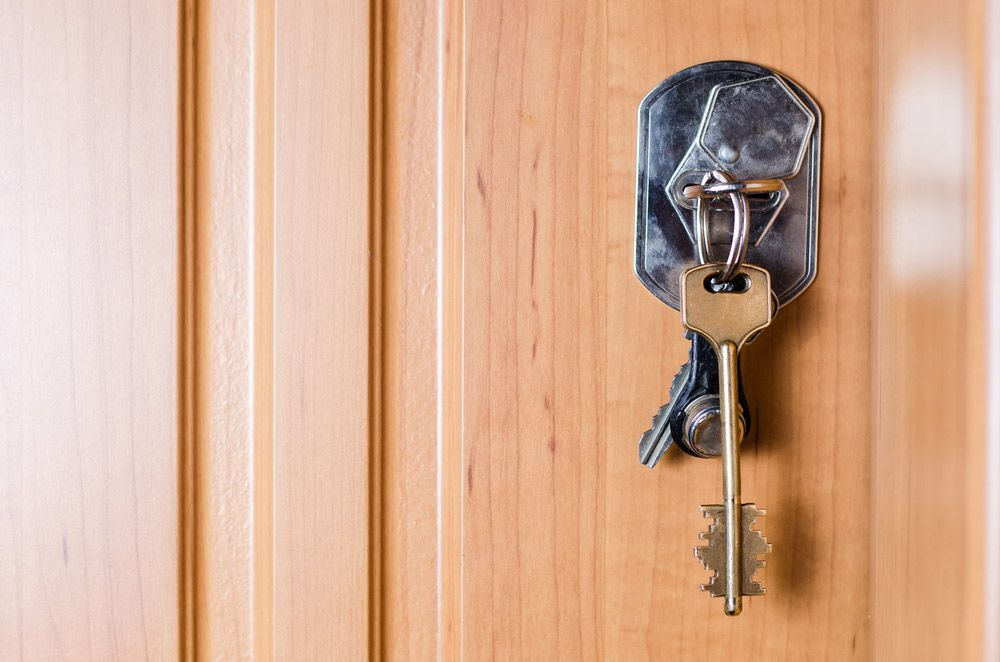
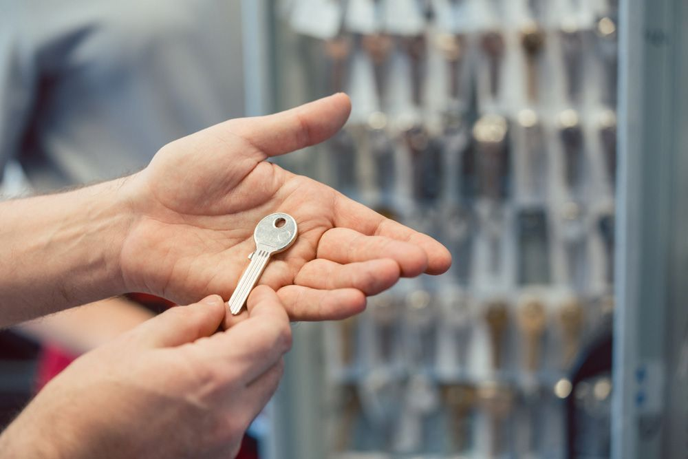

On this page
AT A GLANCE
At SPL Security Solutions, we're more than just a locksmith service; we're your partners in safety and security.
Get A Free Quote Now!
Thank you for contacting SPL Security Solutions.
We will be in touch soon.

Professional Locksmithing for Homes & Businesses
At SPL Security Solutions, we're more than just a locksmith service; we're your partners in safety and security. From the moment we step into your property, you'll be greeted with a blend of professionalism, understanding and unparalleled expertise. Our services are carefully tailored to address our clients' individual needs with a focus on providing solutions that are effective and seamlessly integrate with daily life.
In a world where security concerns are evolving rapidly, relying on a trusted name in locksmithing is more important than ever. Whether you need state-of-the-art access control systems to monitor who comes and goes or you require emergency locksmith services in the dead of night, SPL Security Solutions is here for you. From lock replacement, rekeying and restricted key systems to the installation of monitor and response systems, we take care of everything in Pacific Pines.
For more information on our comprehensive locksmith services, call (07) 5588 8111.
Pacific Pines homeowners rely on our residential locksmith services to keep their properties safe. Our team provides precision lock installations, efficient repairs and preventative rekeying to keep potential intruders at bay. Plus, our key duplication service provides added convenience and our emergency lockout support ensures you're never unable to enter your home.
Our commercial locksmith services are available to businesses in Pacific Pines who need their property protected with the latest security measures. We provide high-quality lock installations, master key systems and access control solutions to manage who enters different parts of your premises. Our team also offers 24/7 emergency assistance and can conduct security assessments as required.
With our team on call, you never have to stress about being locked out of your car. Our automotive locksmith services in Pacific Pines provide drivers with prompt and professional assistance for all their car key needs. From lost or damaged keys to malfunctioning ignitions, our team can help. We also offer transponder programming services and 24/7 emergency assistance for added convenience.
In Pacific Pines, our restricted key systems ensure maximum security by allowing only a select list of authorised persons the ability to duplicate keys. This list, carefully managed and updated by the client, ensures each key remains within a closed loop of trust. By leveraging patented designs, our systems provide unmatched control and security over designated areas of your premises.
Protect your valuable items and confidential documents with our safes in Pacific Pines. Our selection includes various sizes, locking mechanisms and fire ratings to meet specific security needs. We also offer installation, maintenance and emergency unlocking services for a seamless experience. With our safes, you can rest easy knowing your most valuable assets are safe from theft, damage and other external threats.
Protect your property with our range of security systems in Pacific Pines, designed to provide advanced surveillance and monitoring capabilities. Our solutions include CCTV cameras, alarm systems, access control and intercoms for comprehensive coverage of your premises. We can help you design a tailored system that meets your specific security needs and budget.
Pacific Pines properties can experience enhanced security with our lock hardware including tamper-proof deadbolts, mortice locks and keyless entry systems. These options are tailored to meet a variety of needs.
Our door hardware in Pacific Pines includes robust door hinges, ergonomic levers and high-performance closers. Each product is designed to improve the functionality and appearance of entryways.
We offer architectural door hardware blending style and function, including fire-rated solutions, smooth door closers, and elegant handles for both traditional and modern interiors in Pacific Pines.
24/7 Emergency Locksmith Services
At SPL Security Solutions, we provide 24/7 emergency locksmith services to Pacific Pines residents and surrounding areas. Our team understands the importance of rapid response times and professional solutions during lockouts or other urgent situations.
If your property has been compromised by attempted or actual break-ins, our team can assess the damage and provide necessary repairs or replacements to secure your entry points. With our mobile vans equipped with the latest tools and technology, we can provide on the spot lock replacements, rekeying, key cutting and reentry services—ideal for those occasional lock outs!

Contact Details
24/7 Emergency Locksmiths or Security Tech


Trading Hours
Retail Shop

Frequently Asked Questions
-
How important is the quality of the door in securing a lock?
The quality and strength of the door are critical in securing a lock. A high-quality lock installed in a weak or deteriorated door can be easily bypassed by simply forcing the door open. Ensuring both the door and lock are sturdy and well-maintained is key to overall security.
-
Why is it important to have a professional locksmith install my locks?
Professional locksmiths have the knowledge and tools to install locks correctly and securely. Improper installation can compromise the lock's effectiveness, making it easier for burglars to gain entry. A professional locksmith can also recommend the best type of lock for your specific needs.
Locksmith & Security Solutions Gold Coast, Brisbane & Northern NSW